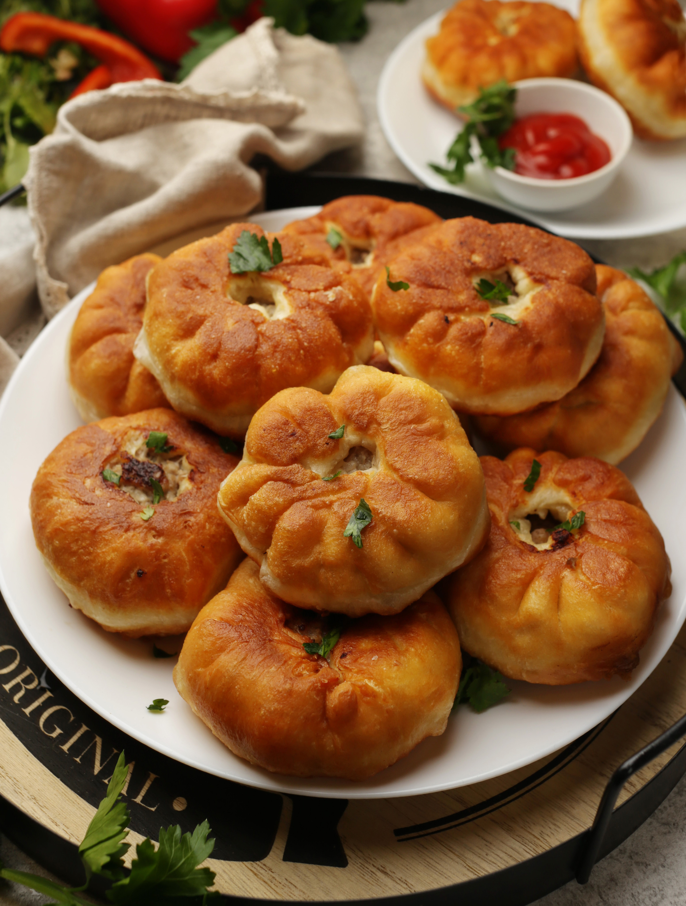

Блюдо татарской, казахской и башкирской кухонь. Готовится нередко в виде большого пирога из пресного теста с мясом и картофелем, который называется бэлиш. А обжаренные во фритюре пирожки с мясной начинкой на дрожжевом тесте — беляши (иногда их называют перемячами). Не утихают споры, что называть беляшами, а что — перемячами. Считается, что выпечка с дырочкой в середине — перемячи, а беляши больше похожи на пирожки или пончики с начинкой, безо всяких отверстий. Но сейчас эти различия несколько стерлись, что беляшами называют изделия что с дырочкой, что без. Для беляшей обычно используют рубленый фарш. Чаще всего берут баранину или говядину, хотя часто встречаются беляши со смешанным или свиным фаршем, что не разрешается традиционной для региона происхождения этой выпечки религией, но прижилось у славянских народов бывшего СССР. В начинку для сочности кладут много лука, а при жарке, когда переворачивают беляши, в дырочку вливают несколько ложек кипящего масла — так начинка получается еще сочнее и быстрее готовится. И не забывайте следить за температурой кипения масла с помощью щупа или кулинарного термометра, чтобы ваши беляши не сгорели!
для теста:
для начинки: